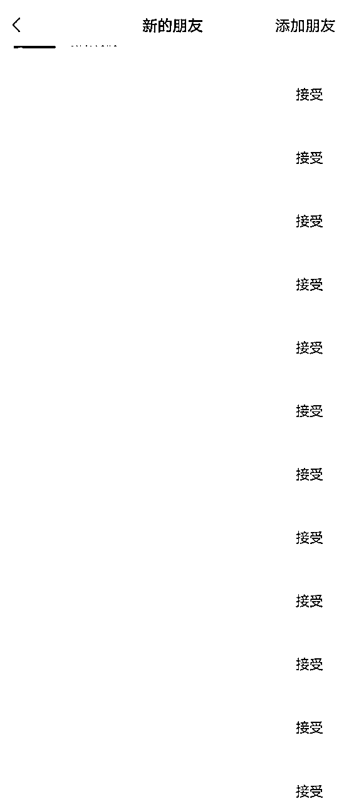

来源：https://eqc9f6vzuhv.feishu.cn/docx/Pca9d8vIboEgBWxc4ZkcC47BnVf
在8个月前，我还是一名刚接触自媒体，连“引流”是什么都不知道的新手小白。
而如今，依靠日更写作获得的爆发性成长， 我已经成为了一名陪伴想要通过写作成为斜杠青年朋友的学长，专注分享写作成长和写作赚钱的相关技巧。
不仅在多个付费知识星球获得精华帖，并于5月开办了自己的第一期写作课程，7月打造了四个不同领域的付费社群，直接变现4000+。
在分享之前，先做个自我介绍哈：
【昵称】微微
【坐标】深圳
【职业】文员+自媒体副业
【擅长】写作、知识管理。
【自我介绍】
1.十二年写作经验，8个月改稿560+，原创290+篇，输出字数69W+。
2.在生财有术、玩赚新媒、阿猫的觉醒者·IP创业营等知识星球获得精华帖，并获得龙珠碎片，觉醒果实等奖励。
3.觉醒者·IP创业营知识星球6月、8月积分排行榜月榜第2名，其中6月连续4周登上周刊，单月获得15颗觉醒果实。
4.多个付费知识星球精华帖持有者，精华帖数量50+篇。
5.不到半年打造了一门基础写作课。
6.自律健身半年获得6块腹肌。
7.近6年阅读331本书，写下49本笔记本。
8.个人打造4个不同领域的付费社群。
生财有术近200赞的精华帖：
https://t.zsxq.com/0fFZfdGuZ
【提供资源】
1.写作/改稿方法、知识管理。
2.成长认知、学习方法、6年阅读笔记精华。
3.公众号全面运营、引流方法。
4.《新手小白写作避坑指南书》
就在前两个月，我依靠在知识星球的日更写作，成功在6月同时获得2篇精华帖的那一天，链接精准好友100+人，而且都是高质量的小伙伴。

接下来，微微将从以下几点进行分享：如何用日更写作打造个人IP，链接精准好友的秘诀。
1.立正人设
2.知识蓄力
3.受众群体
4.真诚利他
「人设」是综合了你的性格、节奏、定位、领域、成绩等形成的个体称呼，你也可以理解成他人对你的印象，或者在他人眼中你的整体样子。
相信大家都非常熟悉这个概念，不过正因为熟悉所以才更容易走歪，这里先对人设作出两点关键分析，以免我们将来因此而翻车。
有一个公式可以直接套用：真实+隐瞒+擅长/专业+成绩=人设。
这个不难理解，即按照我们个人的性格、特点、爱好等方面为基础，立足于根本的情况下，不过分夸张地美化、夸大自身所呈现的第一印象。
也就是以现实生活中的样子倒映在线上自媒体中，不掺水分、不作假、不编造对自己有利或是不存在的事实等。
如果你以虚假的一面去展示，那么你就要面临随时翻车的准备，比如：
你在一个分享的场合里说了一个不存在的谎言，说自己是一名10年经验的演讲家，在某某地方说过什么经典发言，然后得到了多少专业人士的认可。
那么，你就要记住在这个分享会里的所有人，还有你所说过的每一句话，时时刻刻守住自己虚假的人设。
自媒体圈的信息都是互通互流传的，所以真实的人设才能确保你能够舒适、自然地分享自己过去的一切，还有眼前取得的成绩。
真的假不了，假的始终会露出马脚，一开始就要踏实做好，老想着作弊会被所有人踢出场外的。
不过，真实的意思也并不指的是你需要把自己的一切都展示出来，包括吃喝拉撒等日常，这样不仅无法打造个人IP，反而会引起精准读者的反感。
所以，我们要有意识地“隐瞒”一些现实内容。
不要误会，这里说的隐瞒，并不是如上述所说的作假或者是欺骗，而是选择性隐藏你现实生活中，对自媒体没有助力效果，甚至是减分的一面。
这里以微微举例，我的定位领域是写作方面，那么与它无关的事情，即使是我真实的行为，也没有必要向受众展示，比如说我喜欢做饭、做家务、逛超市买菜等。
这些属于琐碎事且不符合个人定位的事情，最好是适当把它们隐藏起来，避免完全融入人设中，除非你是做饮食、家庭式料理等厨艺的领域。
这些私下生活的真实日常，稍微提及一些即可，可以让读者感受到你的温度，而不是机械般的复读机，所以一定要适可而止，不要没完没了地分享生活琐事，否则很容易拉低你的专业度。
如果没有专业度，那你也就没有吸引力。
个人IP为什么是未来三五年，甚至在十年后还会是最好的创业路线呢，因为它相当于某个领域的百科全书，或者专业技能书。
但是比起书籍而言更为直接，它可以在短时间内带给其他人更省时省力的知识，相当于直接走高效且可以避坑的捷径，也就是说：
比起自学书中的知识，或者通过课程的半自学形式去让自己获得成长，变得优秀，都不如向某个领域的拥有知名个人IP的老师请教。
所以个人IP会越来越吃香，这也是我们为什么要打造个人IP的原因。
但是个人IP并没有想象中那么简单，你在某个方面取得了显著的成就，你拥有某个方面的专业知识，这些都是不足以让人信任的，你需要足够的「专业度」。
知识是标配的技能，要让人一眼看上去就觉得很专业的话，对于所在领域的知识至少也需要70分以上，所以知识储备方面一定要深。
这一点相信大家都不会感到陌生，就不用详细说明了哈，不过微微可以分享一下关于汲取知识的渠道：
如果不是天赋加持，自学的效率永远赶不上有结果的人的指导，但是！这并不代表自学是没有意义的，找到老师带领是成长的加速器，而前提是你已经有了起跑的基础。
自学，是让你突破认知、提升自我的第一道门槛，也是链接其他人之前的必修课。一开始就让人安排好你的生活模式、未来工作方向、尽可能避开所有的挫折，结果是：
你的依赖性会特别强，你的抗压能力会非常弱，你的临时应变能力会非常差，你的专业能力会非常干（没有自我意识），这一切都会把你引向规划好的路线跑，同时也会把你引向不定时出现的深渊。
因为没有人能够带你一辈子，你总得自己一个人扛下一切，走完自己该走的路。
所以，开始读书，开始按照自己的想法去尝试学习、去尝试醒悟、去尝试拥有自己的见解和思想吧，微微先给你介绍几本改变思维的入门级书本，之后就靠自己走出“隧道吧”。
①《精进：如何成为一个很厉害的人》
②《戒了吧！拖延症》
③《逆转思维》
④《有钱人和你想的不一样》
⑤《世界顶级思维》
⑥《如何成为一个会学习的人》
此外，你也可以关注不同类型的新闻、政策，时刻留意圈内的动态信息，养成持续关注官方新闻、官方政策的习惯，从中提取出对自身事业发展相关的因素，再配合圈内的动态消息进行灵活改进、纳为己用。
当然，在自学的路上，也要学会灵活转变，可不能一股脑地坚持自己一个人走到最后，适时求助良师益友，也是一个获取知识、得到信息差的做法。
高维可以吊打低维，但是低维永远干不过高维。你的认知应该是建立在不断被摧毁的情况下而又持续建起来的，这样才能更为广泛地汲取更高深的知识。
也就是说：你在自学、咨询、请教的路上应该是随着时间的流逝而变得更加有深度，更加高难度，这一点，在你个人身上和目前的圈子，是无法做到的。
你可以向下链接，但不应该在下层扎根，持续低阶的认知、知识会让你始终无法突破60分的及格关卡，你打造不了个人IP，你只能算是有点专业知识的自媒体人。
所以一有机会，就要不断去接触各类圈子的优秀人群。也就是去请教比你更优秀的人，只要在能力允许的情况下，我都建议你可以付费咨询、付费进入社群、训练营等，摒弃之前圈子里的侃侃而谈，接受他人的批评与建议。
你只有接触的圈子多、足够优质，见识到更多上层人群的思维模式，才会懂得如何把自己的学习心得、学习经验、干货内容分享给在你之下的小伙伴，形成“利己”转化为“利他”的正循环。
这时候，你的知识管理就完成了重要的一环，你也学会了最基础的知识管理方法，输入→输出。
最后，注意这一点，千万不要遇到任何问题立马去请教、咨询，这样与刚才第一点所说的没有区别，你是在依赖，并不是在有效交流。
这是由我们对所接触事物的第一感觉而产生的情绪、感受、第一反应，你也可以理解为感性能力，而这与专业度有什么关系呢？
你知道“眼力见”这个词吗，把它与个人IP的专业交付联系在一起的话，转化过来的意思也就是「因材施教」。
表面上看起来它在专业程度上好像没有占据特别重的位置，而事实上这是每一个有结果的人（成功者）身上都附带的技能，比如心理咨询师。
没有眼力见，无法筛选出执行力强的交付对象，没有敏感力，无法捕捉到与领域内的知识相关联的辅助事物，不懂因材施教，无法有效教学出有成绩的学员。
专业不仅是知识，而且也需要你拥有判断以上基础问题的敏感能力。
这是能够迅速对刚接触的新鲜事物产生快速的理解、能够在短短的时间内把吸收到的信息高效的过滤、整理、释放的能力，也是给人专业的第一印象。
仔细想想，如果一个人连话都说不清楚，一个知识点都要表达半天才能理清思路，你会怎么判断他的专业能力呢？
思维逻辑能力，不同于单纯的思考，它是在于你基于思考的前提下，通过对眼前所接收信息进行合理性、推理性、整合性等方面的延伸，具有自我修正和完善的特点，可以更好地了解问题的本质和规律，从而更好地预测、评估、解决问题。
咱可以举个例子，当你看到路人为车辆让路的时候，你会想到什么？
A.“这车怎么开的这么快，应该要让人的嘛。”、“或许这个车有点急事要处理呢，都不礼让行人。”
B.“如果每个人都能冷静思考，选择性地退让一步，世界会不会更美好呢？”
C.“其实在既定的规则下，有时候外界的事情会让我们失去正确的判断，但如果事情渗入了其他因素，这个判断又是否正确呢？”
A是停留在了思考层面，B是拥有了初阶思维能力的入场券，C是掌握了思维逻辑能力，从中观察，再三品味下，不难看出C的专业程度更高，它通过小小的事情，能够延伸到更广一层意境。
这是增加自己信任背书的最直接途径，也是对自身实力的证明，可以是收款截图、咨询内容、价值长文，也可以是通过写作或者你的定位内容取得的其他有效结果。
而这个结果，是小白起步期无法轻易做到的，比如微微：
6月份在阿猫老师的「觉醒者·IP创业营」知识星球日更20篇价值长文，连续4周登上周刊，月积分榜排名第2，单月收获15颗觉醒果实，在「个人品牌变现攻略」获得多篇精华帖，拿到20+和平星碎片，登上周积分榜第1名。
自己所写的《新手小白写作避坑指南书》，通过转换电子书分享的形式变现1000+；并且把这十二年的经验浓缩成写作资料包和课程，靠着这些多年总结的写作经验直接变现3000；4个付费社群一天预售变现1000+。
一眼看过去，就感觉到这个人好厉害，这时候再交流的话，那你的人设则会更加明显、突出，也能在时间的过滤下，让关注你的人产生：
想学习基础写作？想要找一个能陪伴你写作成长、学会写作技巧、找到写作变现方向的学长？
找微微呀，他很擅长这个。
得，能做到这个地步，那你的个人IP就算是及格了。
人设是打造个人IP的基础，也是出发点，所以在中途一旦出现「翻车」，那所有的一切恐怕都会功亏一篑，但是仍然会有不少人为了追求快速变现的目的，铤而走险。
这里不用详细说明，只要懂得以下几点即可：
以个人的真实经历去输出，不要添盐加醋，不要弄虚作假，不要把没有的事情但很有震撼性的故事加在自己身上，一切遵循真人真事原则。
如果没有特殊的经历，那就从自己读书到现在，或者小时候到现在最突出的一件、多件事进行加固，也算是一个让人有印象的点。
除了以上说过的点以外，尽可能隐藏自己自卑、暂时没有任何能力的事实，倒不如说，不要展示自己虚弱的一面，要尽可能凸显自己优秀的一面。
你说自己每天都在刷手机，任何知识技能都没有，那是自暴自弃，这种错误的心态下都立不了人设，该做的是把情绪隐藏，转换为正面的能量。
比如说，你每天都刷手机，那不是可以反向说明，你掌握了「刷手机的危害」这个技能吗？这也算是你的初期人设，比如分享小知识的人设。
不要不懂装懂，不要自以为是，不要编造虚假的知识，不要搬运他人的知识分享、成绩、收款截图等当做是自己的东西，不要略懂皮毛就开始授人予鱼，不要扔掉谦卑的初心。
除了以上的要点以外，也不要自来熟的随意攀附，更不要把假大空的道理当做是高阶认知。
一句话，没有做到、没有做好、没有做过的事情，不要夸大，不要编造，不要传播不存在的东西。
自媒体的圈子很大，但信息流通的速度远比你想象的要快，有时候一个小水花，也能引起很大的波浪涟漪，所以不要逞一时之快，毁了自己的前程。
这里的知识蓄力其实与上文提到的知识量是“师出同门”，与之不一样的是，以上分享的是关于知识怎么汲取，而这里是说明为什么要汲取知识。
除了是专业度必须包含的关键因素以外，汲取知识还能够帮助我们做到以下几点：
无论是新手小白，还是小有所成的新人，或是处于高质行业的高手，都需要不断地破圈链接，从而不断认识更多优秀的人，得到更多打开格局的经验。
在资源、人脉、信息都有限的情况下，事实上你很难通过自身的努力、微不足道的成绩、以及为人处世等方面去接触到上一阶层的前辈。
归根结底是因为：你无法给他人带来有效的价值。
如果你不能理解为什么想要链接，得给他人提供有效价值或者帮助的话，建议可以看看辰风社群里，七七姐分享的自媒体社交礼仪。
现实生活中遥不可及的大佬，因为自媒体这个平台，才让我们有了近距离接触的机会，凭什么你能够任何事情都不做，就能轻松链接上大佬呢？
知识是为「有机会解决问题」而服务。因而当你知识量不足、蓄力不够强的时候，你的价值可以说是微乎其微，只有在汲取的同时，为自己铺好用途，价值才会逐步上升。
情绪价值指的是维护关系与提升幸福的一个关键思路，就是在自己舒服的情况下，尽可能地让跟自己有关系的人也舒服。
一个没有学识的人，是无法很好地控制自身的情绪变化的，因此也就存在情绪不稳定、粗言粗语、无法良好沟通、表达带有话中话的问题。
能够掌控自身的情绪，不仅能给提供情绪资源支撑他人，而且可以有效降低焦虑与内耗，减少消耗心理能量，继而更好地形成一种无形的养分，滋养自己，也治愈别人。
这种爱自己、爱生活、理解事情的情绪，正是高效率做好事情的重点因素之一，而知识则为它的重点组成部分。
情商决定了一个人的受欢迎程度，而它的最终目的地是人品，人品决定了你背后能够巩固多少人脉。
“书中自有黄金屋”这句话不假，我们汲取知识不仅为扩充知识储备库，是因为里边也隐藏着对于学习的敬畏，反过来思考，也就是情商的培养。
情商翻译过来可以理解为让他人舒服，一般而言，学识越低的人越看不起人，也就会经常做出、说出得罪人的事或话，继而一直把自己困在一个低价值的圈子里。
当知识蓄积的越多，便越能够发现自己的无知，从而不断地涌现对知识的渴望，而交流属于获得知识的来源之一，则会给你带来情商的训练。
学得越多，越乐意与他人交流，也会越愿意换位思考，以更多方面的角度去汲取知识，随着情商的提升，人脉也随之越广，这是一个良性循环。
还是那句老话，「人永远赚不了认知以外的钱。」
你想要提升认知，只有两种选择，一是通过你的知识去创造更多与认知相关联的可能性，二是通过你的经历去验证哪些认知是对是错。
当我们没有那么多经历，也没有太多时间去用经历试错时，提升认知唯一的选择便是汲取知识。
储蓄大量的知识、收获大量的信息差、搜索大量的学习工具、提炼大量的成就精华...当你的认知越是往上爬，你看到的世界也就越为清晰，赚钱的线索也就越为明显。
而以上这一些，当你能沉得住心，耐住性子沉淀下来，当蓄力值达到一定程度时，只要一个触发器（时机），你便能实现一夜爆发。
这里先解答一小部分小伙伴的疑问，肯定有人疑问过：我也是日更啊，我日更200天，但是都没有链接到精准好友，而且也没有取得显效的成绩呀？
微微答：那是因为你没有认真下苦工去做好功课，日更的前提是要有针对性地对某些特定群体，分享给他们目前需要，或是未来需要的价值内容。
目前你所擅长的东西，你所交付的东西，你所能给予对方的东西，按照这些方向输出的内容，都决定了你的受众群体是哪些类型，你也得在对应的平台、区域下对这些类型的群体进行内容输出。
即：换角度、换视觉思考。
比如，你总不可能以大学生的角度去为小学生提供他们需要的情感价值，也不能用单身还没谈过恋爱的经验去分享关于母婴、婚姻相处之道的内容吧。
从你的受众群体角度出发，去找到一些能够与他们产生联系的话题，而不仅仅是他们感兴趣的话题，最好是根据联系中最强的特点进行主攻。
比如微微定位的受众群体是对写作、认知、自媒体相关的，那么我的内容基本上只能围绕这3点进行输出，所在的平台也应该是知识星球、小红书、公众号、知乎等干货类较强的平台。
然后该怎么吸引好友来到你这里，并且愿意留下来呢，“见面礼”是一个非常重要的契合点。
没有人会拒绝对他们有价值、有帮助的东西，特别是不用付出就能得到的收益，按照心理学的角度来说，即使价值不高，但是对于收下礼物而产生的情绪，会让他们更愿意留下来，衍生或许将来还会有的期待心情。
一般而言，在你进行「知识蓄力」的时候，这些见面礼应该也会在无形中形成，因为你所学的基本与定位、领域相关，便可以同步起来。
比如微微而言，我的见面礼也分为了写作类、认知类、自媒体经验心得、知识管理类等，这样应对慕名而来的读者或者粉丝，都能最大化地把他们留下来，同时后期便于转化。
其实更多剖析受众群体的画像，像是她们的爱好、日常生活、工作内容、穿搭、三观、大众普遍印象、小众的突出特点等，完全了解一个人她的表面需求、内心需要、渴望需求。
把他完全当做是你要研究的项目，分析出所有相关的因素，你会更容易拴住他的心，也就是得到铁杆粉丝。
受众群体并不难定位，微微分享你一个简单的公式：
你的擅长+感兴趣的人群+你的性格+人群接受年龄+你的内容+人群活跃地点。
如：写作+小白投稿者+温和细腻+35岁以下成年人+写作干货+知识星球读者圈。
很明确的答案=
我要找到关于读者圈的知识星球，确定了年轻人经常评论点赞的时间是早上7-9点，那就在早上时分输出偏向于治愈系的写作内容，让他们产生共鸣，继而想要认识我。
我们都知道「真诚利他」是对他人最有效的吸引力，但对他人有利的内容，到底又是怎么样的呢？单纯把他们需要的知识分享出去？
非也，严格意义上来说，真诚利他里面包含了三点因素，也就是要掌握用户思维。
这里的用户思维，指的是以作者的视觉与读者的视觉交织在一起，找到两者之间的交集圈，以此作为基础进行思考延伸。
也就是俗称的找到“痛点”、“爽点”、“痒点”。
读者都不喜欢说教式的文章内容，所以最好是避开“教师”风格的输出，采用“医生”的角度去说明。因为人性总是会第一时间的保护自己，因此外界的刺激最好是告诉他这样做的危害性。
以“保护她”（利他）的形式，去真心（真诚）输出价值内容。
痛点其实不难理解，就是非常直观地戳中读者的内心，就一个字：怕。
挖掘出他们目前感到害怕的东西，通过先输出这样做的危害性，再转而给他们提供可以摆脱危害、回到“安全区”的方法，继而达到人性化利他的效果。
比如：
1.快减肥吧，这样胖下去的话谁都嫌弃你。
2.健康的身体是美好生活的第一要素，你还有非常幸福的未来，为什么不给自己一个机会去更快乐地享受呢？
我以比较犀利的角度和比较委婉的角度去输出，即使是面对不同性格的受众群体，也能够把核心内容传达到位，关键是要传递出：
危害性，继而产生恐惧。
而爽点即为“即时需求被即时满足”。
翻译过来也就是说，对想象中的期待能够得到及时的反馈，感觉自己的欲望得到了有效的满足。
这里的内容就相对较为容易理解，比如当下的游戏，几块钱就能获得大礼包，遇到难过的关卡再次充值即可，不断地产生需求，也能在正反馈中持续地感到愉悦。
那我们输出的内容就可以围绕这一点进行，比如读者是写作差的类型，那么我可以分享给他关于写短文案（300字）的方法、公式。
这种能够带来速成的效果，会让人在短时间内产生非常强的多巴胺，而一旦体验过这样快速的正反馈，他便会持续产生接下去写的动力，因而再分享更具价值的内容，便能够更加引起他的关注，且愿意留下来。
最后痒点是什么呢？坦白而言其实可以理解为“画大饼”的进阶版，也就是激发人对未来的期许。
每个人都曾想象过未来的样子，能够获得怎样的成功，能够拥有多少的财富、美好的生活。
你如果能够抛出他人能看见未来的可能性的内容，便会引起极大的好奇心和想象，也就是：30天语言训练营，由小白变成说话高手。
我们可以适当运用对方关注且急需改变的方向去输出，基于真诚的前提下，当然你也可以按以上的标题去交付，关键是一定要完成承诺。
为什么呢？因为一旦有人从你这里顺利毕业，那么你的成绩也会增添一项，你在外界的信服力也会增加一分，所以完全可以按照自己的能力范围去选择重交付或者轻交付。
关键在于，要做到真实有效。
综合以上的准备工作，以及持续地输出便是日更写作下，不断地链接到精准好友、读者粉丝的秘诀，微微亲身测试，可行。
在打造个人IP方面，芷蓝、刘小新、理白、小可爱、辰风等老师几位老师有着更为成熟且专业的能力，咱也是在向他们努力学习中，遇到迷茫期的话，小伙伴们也可以找他们交流链接呀。
感谢你的阅读。
加油ヾ(◍°∇°◍)ﾉﾞ。